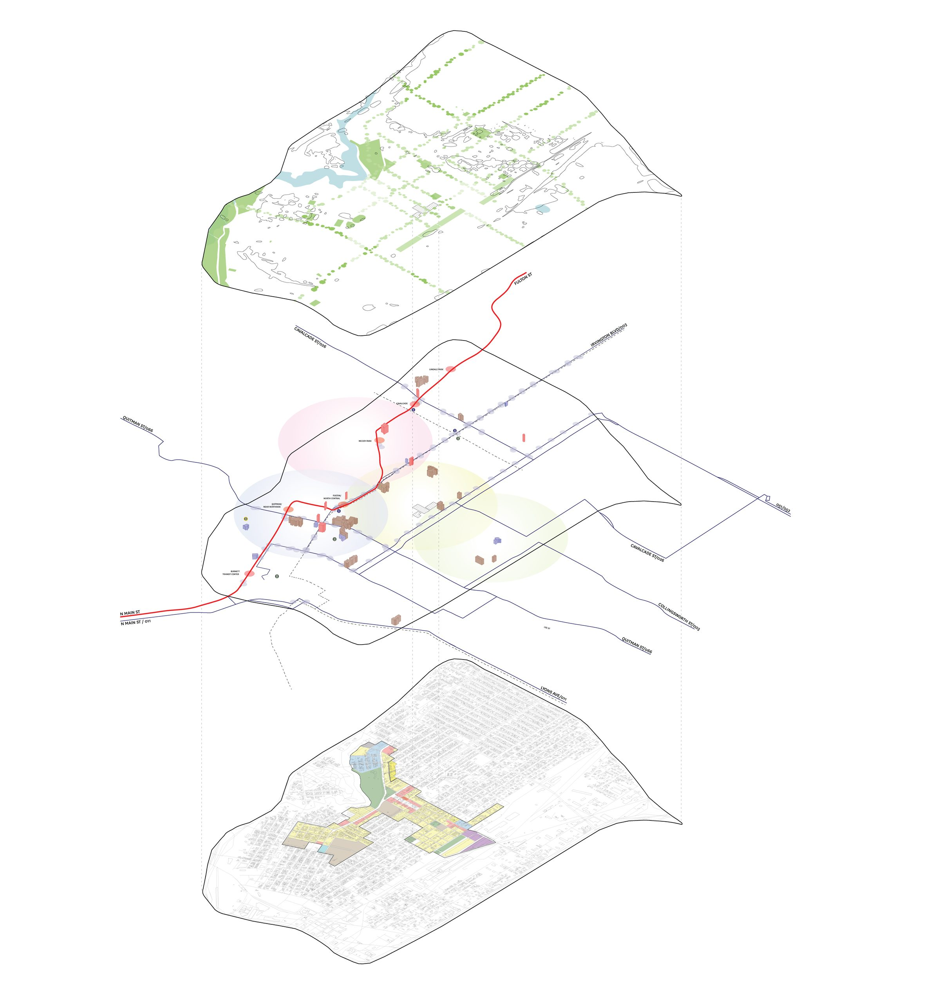
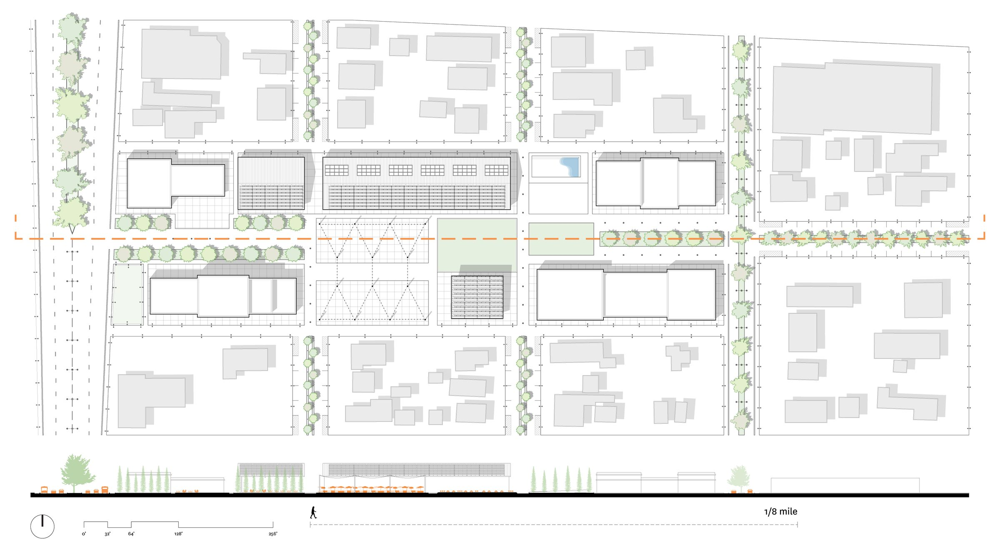
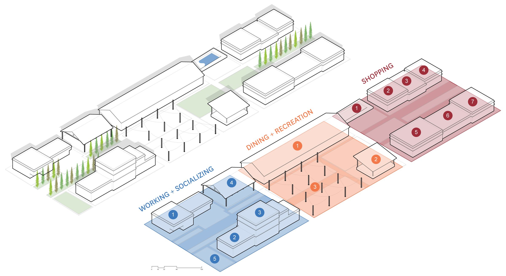
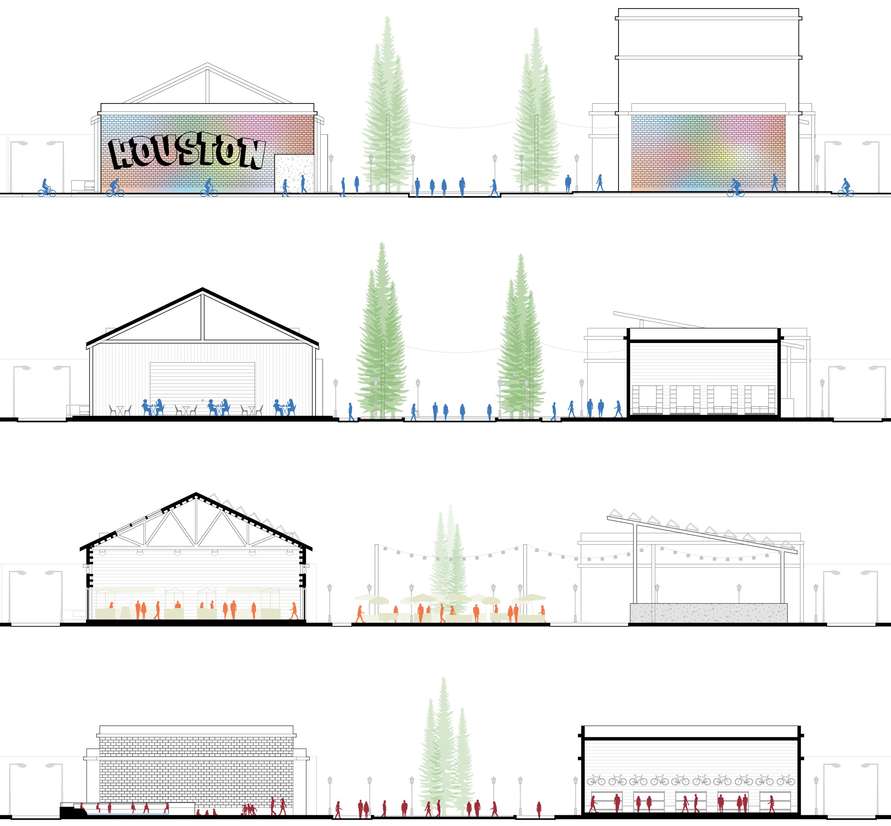
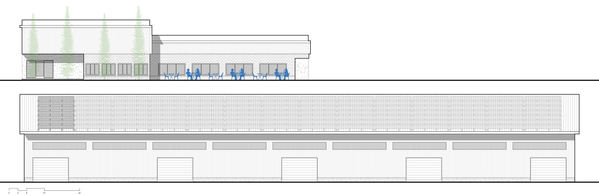
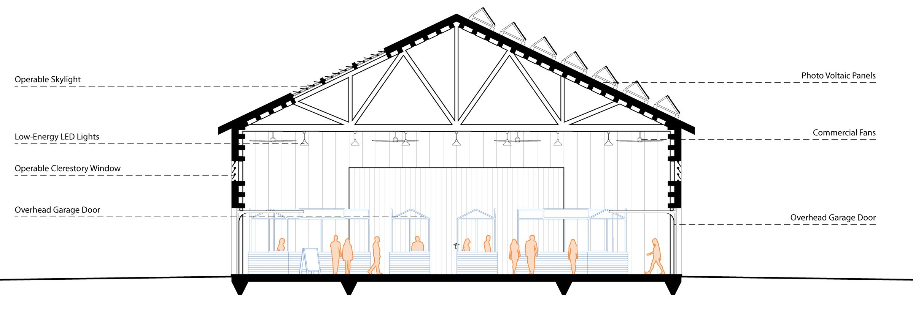
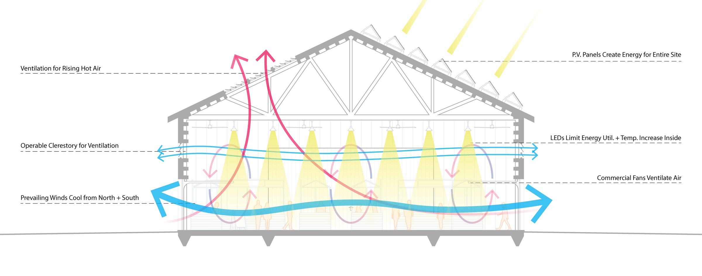

Academic
Collingsworth Marketplace
A walkable, mixed-use marketplace for Near Northside
Houston, TX, USA

Overview
Collingsworth Marketplace is a proposed commercial development in Near Northside, Houston, Texas. The project seeks to create a walkable, family-oriented mixed-use area in a historic and culturally rich community, combining offices, retail and dining with natural outdoor areas, parks and community spaces. Its aim is economic prosperity with a focus on eco-friendly design: passive cooling and ventilation, hydrological solutions for flooding and rainwater, and strategic adaptive reuse.
Creating Community in Near Northside

Sustainable Mixed-Use Development
Collingsworth Marketplace brings working, socializing and leisure into one place, so residents, commuters and visitors have access to work, recreation and outdoor space around the clock. Cafés and offices make mornings busy; restaurants and bars make evenings pleasant; outdoor spaces and community areas such as a stage draw events, shows and rallies at the weekend.
Every proposal also looks to community wellbeing for all ages. Walkable streets with managed access make pedestrian and cycling traffic safer, offices and retail bring employment close to home, and outdoor recreation for all ages runs throughout the site.

Visiting Collingsworth Marketplace

Progression Sections
These sections and elevations show what a visitor might experience at Collingsworth Marketplace. Every part of the site is pedestrian-oriented, with indoor and outdoor space, commerce, offices, dining and family-friendly recreation. The project also attends closely to other aspects of community wellness and placemaking: lighting, shelter from the elements through covered outdoor space, and ecology through passive design, hydrology and human comfort.
Adaptive Reuse and Passive Design Strategies

Preserving Community Identity
Usable structures already on the site are adapted to their proposed programs. New buildings follow the community’s existing architectural and cultural standards, blending the historic Near Northside context with the new design.

Environmental Strategies
The indoor-outdoor marketplace is built from an existing warehouse that spans two blocks of the site. Updates to the structure focus on ecology and year-round comfort through passive cooling and ventilation, and low-energy electrical and mechanical systems.
